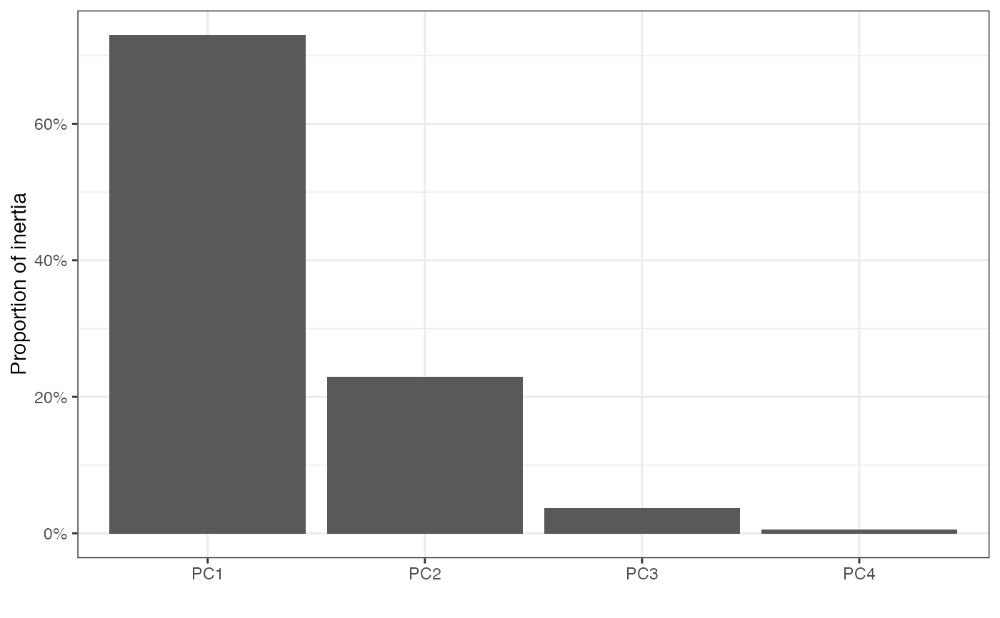
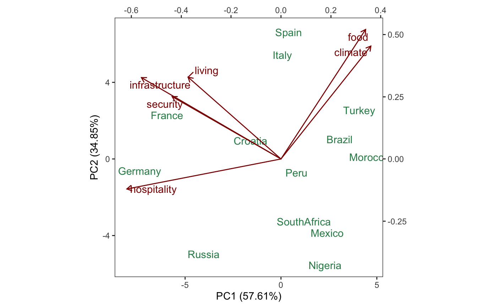

methods-prcomp.RdThese methods extract data from, and attribute new data to,
objects of class "prcomp" as returned by stats::prcomp().
# S3 method for prcomp as_tbl_ord(x) # S3 method for prcomp recover_rows(x) # S3 method for prcomp recover_cols(x) # S3 method for prcomp recover_inertia(x) # S3 method for prcomp recover_coord(x) # S3 method for prcomp recover_conference(x) # S3 method for prcomp augmentation_rows(x) # S3 method for prcomp augmentation_cols(x) # S3 method for prcomp augmentation_coord(x)
| x | An ordination object. |
|---|
Emily Paul
#> [1] "data.frame"#> Sepal.Length Sepal.Width Petal.Length Petal.Width Species #> 1 5.1 3.5 1.4 0.2 setosa #> 2 4.9 3.0 1.4 0.2 setosa #> 3 4.7 3.2 1.3 0.2 setosa #> 4 4.6 3.1 1.5 0.2 setosa #> 5 5.0 3.6 1.4 0.2 setosa #> 6 5.4 3.9 1.7 0.4 setosa# compute scaled row-principal components of scaled measurements iris[, -5] %>% prcomp(scale = TRUE) %>% as_tbl_ord() %>% print() -> iris_pca#> # A tbl_ord of class 'prcomp': (150 x 4) x (4 x 4)' #> # 4 coordinates: PC1, PC2, ..., PC4 #> # #> # Rows (principal): [ 150 x 4 | 0 ] #> PC1 PC2 PC3 ... | #> | #> 1 -2.26 -0.478 0.127 | #> 2 -2.07 0.672 0.234 ... | #> 3 -2.36 0.341 -0.0441 | #> 4 -2.29 0.595 -0.0910 | #> 5 -2.38 -0.645 -0.0157 | #> #> # #> # Columns (standard): [ 4 x 4 | 0 ] #> PC1 PC2 PC3 ... | #> | #> 1 0.521 -0.377 0.720 | #> 2 -0.269 -0.923 -0.244 ... | #> 3 0.580 -0.0245 -0.142 | #> 4 0.565 -0.0669 -0.634 |#> # A tibble: 1 × 7 #> rank n.row n.col inertia prop.var.1 prop.var.2 class #> <int> <int> <int> <dbl> <dbl> <dbl> <chr> #> 1 4 150 4 596 0.730 0.229 prcomp# bind species classification to observation coordinates (iris_pca <- mutate_rows(iris_pca, species = iris$Species))#> # A tbl_ord of class 'prcomp': (150 x 4) x (4 x 4)' #> # 4 coordinates: PC1, PC2, ..., PC4 #> # #> # Rows (principal): [ 150 x 4 | 1 ] #> PC1 PC2 PC3 ... | species #> | <fct> #> 1 -2.26 -0.478 0.127 | 1 setosa #> 2 -2.07 0.672 0.234 ... | 2 setosa #> 3 -2.36 0.341 -0.0441 | 3 setosa #> 4 -2.29 0.595 -0.0910 | 4 setosa #> 5 -2.38 -0.645 -0.0157 | 5 setosa #> # … with 145 more rows #> # #> # Columns (standard): [ 4 x 4 | 0 ] #> PC1 PC2 PC3 ... | #> | #> 1 0.521 -0.377 0.720 | #> 2 -0.269 -0.923 -0.244 ... | #> 3 0.580 -0.0245 -0.142 | #> 4 0.565 -0.0669 -0.634 |# recover observation principal coordinates and measurement standard coordinates head(get_rows(iris_pca))#> PC1 PC2 PC3 PC4 #> [1,] -2.257141 -0.4784238 0.12727962 0.024087508 #> [2,] -2.074013 0.6718827 0.23382552 0.102662845 #> [3,] -2.356335 0.3407664 -0.04405390 0.028282305 #> [4,] -2.291707 0.5953999 -0.09098530 -0.065735340 #> [5,] -2.381863 -0.6446757 -0.01568565 -0.035802870 #> [6,] -2.068701 -1.4842053 -0.02687825 0.006586116#> PC1 PC2 PC3 PC4 #> Sepal.Length 0.5210659 -0.37741762 0.7195664 0.2612863 #> Sepal.Width -0.2693474 -0.92329566 -0.2443818 -0.1235096 #> Petal.Length 0.5804131 -0.02449161 -0.1421264 -0.8014492 #> Petal.Width 0.5648565 -0.06694199 -0.6342727 0.5235971#> # A tbl_ord of class 'prcomp': (150 x 4) x (4 x 4)' #> # 4 coordinates: PC1, PC2, ..., PC4 #> # #> # Rows (principal): [ 150 x 4 | 1 ] #> PC1 PC2 PC3 ... | species #> | <fct> #> 1 -2.26 -0.478 0.127 | 1 setosa #> 2 -2.07 0.672 0.234 ... | 2 setosa #> 3 -2.36 0.341 -0.0441 | 3 setosa #> 4 -2.29 0.595 -0.0910 | 4 setosa #> 5 -2.38 -0.645 -0.0157 | 5 setosa #> # … with 145 more rows #> # #> # Columns (standard): [ 4 x 4 | 3 ] #> PC1 PC2 PC3 ... | .name .center .scale #> | <chr> <dbl> <dbl> #> 1 0.521 -0.377 0.720 | 1 Sepal.Length 5.84 0.828 #> 2 -0.269 -0.923 -0.244 ... | 2 Sepal.Width 3.06 0.436 #> 3 0.580 -0.0245 -0.142 | 3 Petal.Length 3.76 1.77 #> 4 0.565 -0.0669 -0.634 | 4 Petal.Width 1.20 0.762#> # A tibble: 4 × 4 #> .name .sdev .inertia .prop_var #> <fct> <dbl> <dbl> <dbl> #> 1 PC1 1.71 435. 0.730 #> 2 PC2 0.956 136. 0.229 #> 3 PC3 0.383 21.9 0.0367 #> 4 PC4 0.144 3.09 0.00518# scree plot of proportion of variance (inertia) tidy(iris_pca) %>% ggplot(aes(x = .name, y = .prop_var)) + theme_bw() + scale_y_continuous(labels = scales::percent) + geom_col() + labs(x = "", y = "Proportion of inertia")# fortification adds all above columns fortify(iris_pca)#> # A tibble: 154 × 9 #> PC1 PC2 PC3 PC4 species .matrix .name .center .scale #> <dbl> <dbl> <dbl> <dbl> <fct> <chr> <chr> <dbl> <dbl> #> 1 -2.26 -0.478 0.127 0.0241 setosa rows NA NA NA #> 2 -2.07 0.672 0.234 0.103 setosa rows NA NA NA #> 3 -2.36 0.341 -0.0441 0.0283 setosa rows NA NA NA #> 4 -2.29 0.595 -0.0910 -0.0657 setosa rows NA NA NA #> 5 -2.38 -0.645 -0.0157 -0.0358 setosa rows NA NA NA #> 6 -2.07 -1.48 -0.0269 0.00659 setosa rows NA NA NA #> 7 -2.44 -0.0475 -0.334 -0.0367 setosa rows NA NA NA #> 8 -2.23 -0.222 0.0884 -0.0245 setosa rows NA NA NA #> 9 -2.33 1.11 -0.145 -0.0268 setosa rows NA NA NA #> 10 -2.18 0.467 0.253 -0.0398 setosa rows NA NA NA #> # … with 144 more rows# row-principal biplot iris_pca %>% augment_ord() %>% ggbiplot() + theme_bw() + scale_color_brewer(type = "qual", palette = 2) + geom_cols_axis() + geom_cols_axis_ticks(aes(center = .center, scale = .scale)) + geom_cols_axis_text(aes(center = .center, scale = .scale)) + geom_cols_axis_label(aes(label = .name)) + geom_rows_point(aes(color = species), alpha = .5) + ggtitle("Row-principal PCA biplot of Anderson iris measurements")#> Warning: Ignoring unknown aesthetics: center, scale#> Warning: Ignoring unknown aesthetics: center, scale#> Warning: Ignoring unknown aesthetics: label